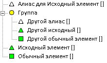

Если вы используете системы "единого входа", которые позволяют использовать один и тот же пароль для различных машин/серверов/приложений, то можно настроить несколько элементов Password Safe таким образом, чтобы изменение пароля в одном из них автоматически отражалось в остальных. Связывание элементов таким образом производится с помощью алиасов. Этот раздел описывает порядок определения и использования алиасов.
Основная идея состоит в том, чтобы пароль элемента мог быть ссылкой на пароль другого. Элемент, на который ссылаются называется исходным, а ссылающийся на него - алиасом. В случае, если элемент является алиасом другого, его пароль совпадает с исходным: при копировании в буфер обмен пароля алиаса, туда будет помещен пароль исходного элемента. Изменение пароля исходного элемента немедленно отражается на связанных с ним алиасах. На первый взгляд это может показаться сложным, но на самом деле все достаточно просто и понятно. Самая сложная часть - это определение алиасов.
Для того, чтобы в Password Safe пароль элемента ссылался на другой, нужно записать его специальным образом. Для этого в поле пароля алиаса нужно написать "имя" исходного элемента в квадратных скобках. Чаще всего под "именем" можно понимать "заголовок" элемента. Таким образом, если заголовок исходного элемента "master", то указание в поле пароля другого элемента строки "[master]" (без кавычек) делает его алиасом для элемента "master".
В общем случае, "имя" может содержать значения полей "группа", "заголовок" и "имя пользователя", разделенные двоеточием. Заметьте, что если заголовок уникален в данном контейнере, то другие поля являются необязательными. Аналогично, если пара группа и заголовок или заголовок и имя пользователя однозначно определяет элемент, указание в имени значения третьего поля не является обязательным.
В элементах контейнера Password Safe, только поле "заголовок" является обязательным для заполнения. Поля "группа" и "имя пользователя" необязательны если комбинация "группа/заголовок/имя пользователя" уникальна. Из описанного следует, что "пароль" для алиаса имеет вид [g:t:u] (g - группа, t - заголовок, u - имя пользователя). При этом достаточно указать только ту информацию, по которой можно однозначно определить элемент. Таким образом, если в контейнере лишь один элемент с заголовком 't', то в качестве пароля алиаса можно указать [t] (если указано только одно значение, то считается, что это заголовок, т.к. он является обязательным). В случае, если несколько элементов имеют одинаковый заголовок, будет выведено предупреждение. Тогда потребуется указать дополнительную информацию об исходном элементе (группу и/или имя пользователя)! Допустимы следующие уникальные комбинации: [g:t:u], [g:t], [t:u] или [t]. Указание двоеточия без значения равносильно пустому полю, например, [g:t:] указывает на элемент с заголовком 't' в группе 'g' без имени пользователя, а [:t:] равносильно элементу 't' без имени пользователя, находящемуся в корне дерева.
Ниже приведены поясняющие примеры.
1. Если заголовок исходного элемента "Сервер" и никакой другой элемент не имеет такого заголовка, то элемент в поле пароль которого указано "[Сервер]" будет являться его алиасом.
2. Если элемент "Сервер" присутствует в двух группах, например "Отдел A" и "Отдел B", тогда первый определяется сочетанием "[Отдел A:Сервер]". Заметьте, что нет необходимости писать имя пользователя, если указанной информации достаточно для однозначного определения элемента.
3. Имя пользователя тоже может использоваться для различения похожих исходных элементов, например "[Сервер:Вася]" и "[Сервер:Маша]".
4. Наконец, можно указать все три поля, например "[Отдел A:Сервер:Вася]"
В древовидном списке исходные элементы, на которые указывает хотя бы один алиас, помечены значком зеленого треугольника вместо зеленого квадрата.
Алиасы помечены белыми треугольниками.
